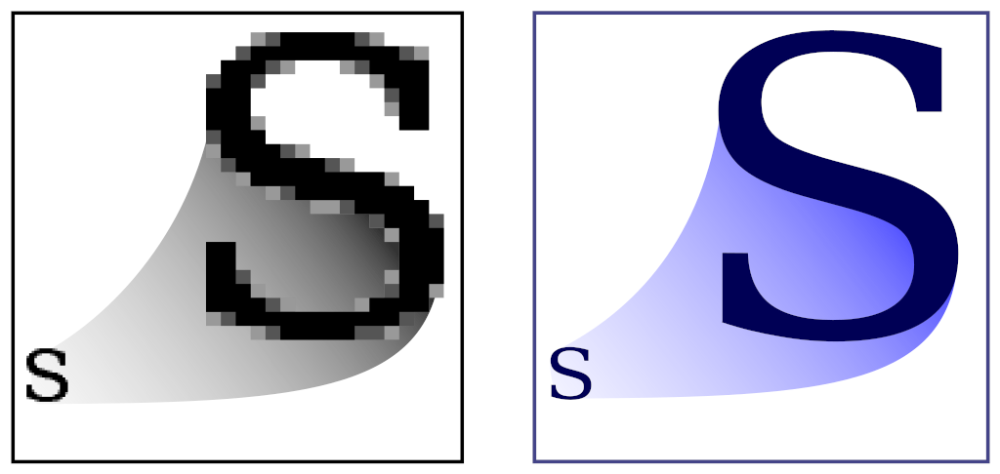

class: center, middle .title-header[Civiform] .title[Coding e Robotica] .subtitle[per l’innovazione sociale] .title-footer[Cividale, gennaio-febbraio 2022] --- class: center, middle .important[ [gzuliani.github.io/civiform/corso12](https://gzuliani.github.io/civiform/corso12)] --- class: center, middle .title[Narrazione] --- # Narrazione * presentazioni * animazioni * storie interattive --- # Presentazioni -- * caricare una nuova immagine per lo sfondo -- * cambio sfondo automatico (temporizzato) -- * cambio sfondo manuale (per mezzo della tastiera) -- * didascalia inglobata nell'immagine -- * didascalia come sprite indipendente -- * breve dialogo sincronizzato tra due sprite --- .center[] .illustration[ Immagine bitmap a sinistra, vettoriale a destra] --- # Formato immagini -- **Bitmap (Raster)** — JPG, PNG, BMP, GIF -- * costituita da una matrice di pixel -- * a forti ingrandimenti si palesa l'effetto mosaico -- * adatto per catturare scene del mondo reale -- * occupano molto spazio su disco (~MB) --- # Formato immagini **Vettoriale** — SVG -- * costituita da elementi geometrici primitivi -- * a forti ingrandimenti i dettagli sono mantenuti -- * adatto per infografiche, loghi, illustrazioni, font -- * possono contenere sotto-immagini in formato bitmap -- * occupano poco spazio su disco (~KB) --- # Interactive Fiction * origine riconducibile ai **libri-gioco** (anni 70) * 1975 — “ADVENT”, prima avventura testuale * 1982 — “Avventura nel castello”, in italiano * 1987 — “Maniac Mansion”, prima avventura punta-e-clicca -- * **2015 — “Il pacco rubato”, mini-avventura in Scratch** --- # Coding con Scratch -- * il programma è suddiviso tra .keyword[sprite] e .keyword[stage] -- * l'esecuzione del codice avviene in risposta ad un evento: -- * quando clicco su 🏳 -- * quando lo sfondo passa a … -- * quando si preme il tasto … --- # Coding con Scratch -- Due modalità di controllo della tastiera: -- * controllo attivo e continuo ```txt quando clicco su 🏳 per sempre se <tasto (spazio) premuto> allora … ``` --- # Coding con Scratch Due modalità di controllo della tastiera: * controllo attivo e continuo * collegato al verificarsi di un evento ```txt quando si preme il tasto [spazio] … ``` --- # Coding con Scratch Due modalità di controllo della tastiera: * controllo attivo e continuo * collegato al verificarsi di un evento --- # Considerazioni -- * non pretendere di scrivere il programma perfetto -- * risolvere il problema generale procedendo per passi -- * sfruttare gli errori per capire dove intervenire -- * commentare le parti più complesse del codice --- class: center, middle .title[Architettura] --- class: center, middle .title[Grafica della tartaruga]